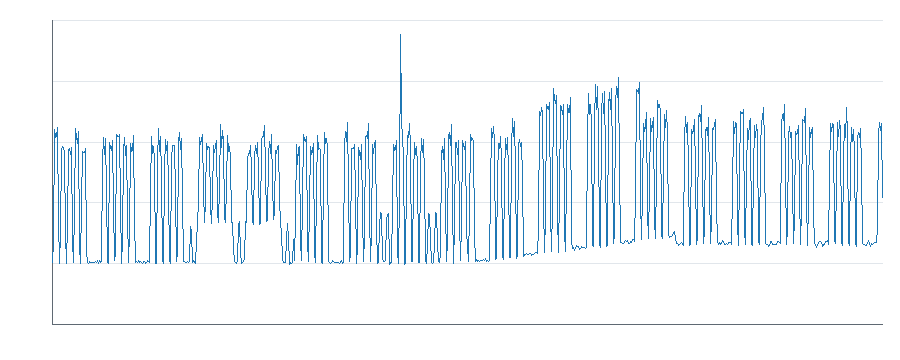
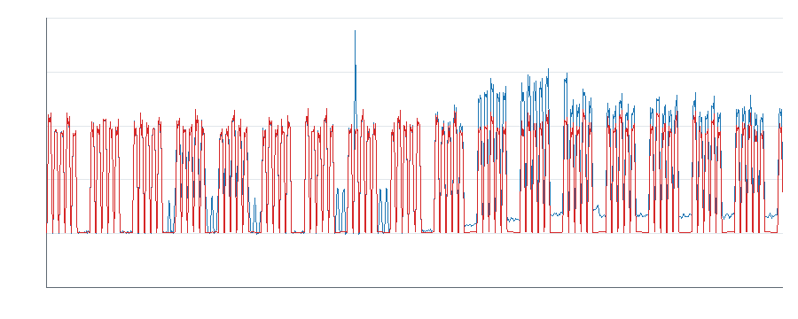
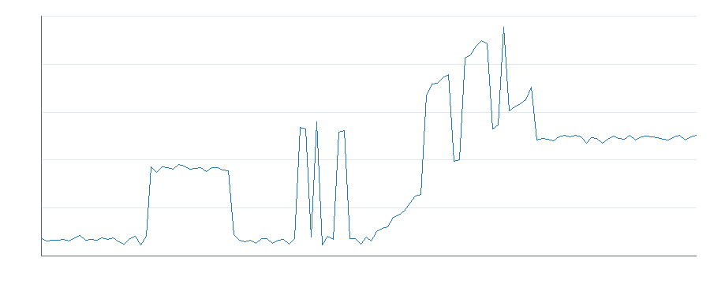
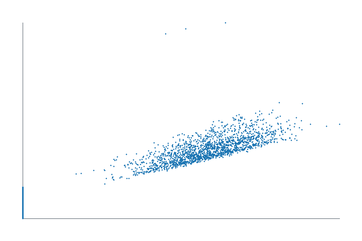

Trois comportements sont confirmes par les donnees : une derive progressive de la charge fixe, une baisse temporaire d'efficacite a production comparable et un nouveau niveau de charge inactive persistant. Trois autres signaux (nuit, week-end et pic ponctuel) meritent une verification operationnelle.
Les kWh ci-dessous sont des surconsommations observees par rapport a une baseline, pas des economies garanties. Aucun total portefeuille ni projection annuelle n'est publie, car certaines fenetres se chevauchent et la part recuperable est inconnue.
2. Donnees analysees
Periode couverte (fin exclue) : 2026-01-05T00:00:00 -> 2026-05-05T00:00:00.
Mesures valides : 11515 quarts d'heure.
Energie totale : 153 411,4 kWh.
Production : 143 191,6 unites.
Variables de controle : production active, temperature exterieure, shift et type produit.
3. Qualite des donnees
Couverture estimee : 99,957 %. Le chargeur a trace 1 timestamp invalide, 1 mesure manquante, 1 valeur impossible et 1 doublon strict. Les quatre trous sont localises ; ils ne coincident pas avec les longues tendances conservees.
4. Profil energetique
La consommation hors production atteint 41 708,1 kWh (27,2 %). Elle inclut une charge de base legitime et ne constitue pas en bloc une economie.

Puissance dans le temps

Puissance observee et attendue

Residu quotidien moyen

Relation production-puissance
5. Baseline
La baseline retenue utilise production, temperature, activite, type produit B et interaction production-produit. Elle est calibree sur le passe puis validee sur la periode suivante.
Validation MAE : 1,237 kW.
Validation RMSE : 1,558 kW.
Validation R2 : 0,9968.
6. Investigations realisees
H01 a H06 ont suivi observation -> hypothese -> test -> contre-hypothese -> nouveau test -> quantification -> decision. H07 et H08 ont ete explicitement rejetes pour confusion et double comptage. Le detail complet se trouve dans `reports/investigation.json`.
7. Opportunites confirmees
#1 — H06 : nouveau niveau de charge inactive
5 979,0 kWh sur la periode, soit 1 046,33 EUR au tarif de 0,175 EUR/kWh.
Le residu inactif moyen reste a 8,30 kW sur 30/30 jours. La temperature n'en explique que 0,168 kW.
Ce que les donnees demontrent : un changement durable de niveau existe hors production.
Ce qu'elles ne demontrent pas : l'equipement responsable ni la part arretable.
A verifier : nouvelles utilites, consignes, fuites, ventilation, pompes ou maintien en temperature.
#2 — H05 : derive progressive de charge fixe
4 232,3 kWh sur la periode, soit 740,65 EUR au tarif de 0,175 EUR/kWh.
Pente inactive : 0,414 kW/j (R2 0,992). La pente imputable a la temperature est 0,0015 kW/j.
Ce que les donnees demontrent : la charge fixe se degrade progressivement, y compris a production nulle.
A verifier : encrassement, fuite croissante, derive de regulation et auxiliaire restant charge.
#3 — H04 : baisse temporaire d'efficacite
2 123,7 kWh sur la periode, soit 371,65 EUR au tarif de 0,175 EUR/kWh.
Apres retrait de la derive fixe, l'ecart actif passe de 0,11 a 12,18 kW, sur 11/11 jours. Production et mix produit sont comparables.
Ce que les donnees demontrent : davantage de puissance est necessaire pour une production comparable.
Ce qu'elles ne demontrent pas : la cause mecanique exacte.
8. Efficacite energetique
Le signal mensuel d'intensite n'est pas conserve comme opportunite autonome : mai ne contient que quatre jours et le ratio recouvre H04-H06. L'analyse a production comparable est plus solide.
9. Impact economique
Les couts ci-dessus portent uniquement sur les periodes observees. La review de chevauchement trouve 1 119,1 kWh sur des timestamps communs ; H04 retranche H05, mais aucun total global n'est affiche sans allocation causale. Aucune annualisation n'est effectuee.
10. Opportunites necessitant verification
H01 nuit : 2 152,8 kWh sur la periode, soit 376,74 EUR au tarif de 0,175 EUR/kWh. Recurrence 15/15 jours, production nulle.
H02 week-end : 877,3 kWh sur la periode, soit 153,53 EUR au tarif de 0,175 EUR/kWh. Recurrence 4/4 jours, production nulle.
H03 pic ponctuel : 239,2 kWh sur la periode, soit 41,86 EUR au tarif de 0,175 EUR/kWh. Un seul evenement de deux heures ; pas d'annualisation.
H01 — prochaine verification minimale
A demander : Demander au responsable de site quels equipements ou utilites devaient rester actifs entre 00:00 et 05:00 pendant les 15 nuits concernees.
Pourquoi : Une liste courte des usages nocturnes permet de distinguer un besoin de procede d'un equipement reste actif par habitude ou erreur de consigne.
Valeur informationnelle : elevee: la reponse peut faire passer la piste de reservee a rejetee ou a test terrain.
Hypotheses departagees : charge nocturne necessaire au procede / charge nocturne non requise ou consigne incorrecte.
Responsable pressenti : responsable de site.
Effort client : Entretien de 10 minutes, sans mesure ni arret d'equipement. (tres_faible).
Attendu si l'hypothese est vraie : Si la charge est non requise, aucun usage nocturne obligatoire ne sera identifie pour expliquer le palier observe.
Cause physique : non etablie avec les donnees disponibles.
H02 — prochaine verification minimale
A demander : Verifier dans le planning si maintenance, nettoyage ou production non comptabilisee avait lieu pendant les quatre jours de week-end identifies.
Pourquoi : Le planning existant suffit a tester l'explication operationnelle la plus probable avant toute visite ou instrumentation.
Valeur informationnelle : elevee: le planning peut expliquer completement les quatre occurrences sans nouvelle mesure.
Hypotheses departagees : activite de week-end legitime mais absente de la production / charge de week-end sans activite planifiee.
Responsable pressenti : responsable de production ou maintenance.
Effort client : Lecture du planning et reponse oui/non, environ 5 minutes. (tres_faible).
Attendu si l'hypothese est vraie : Si la charge est anormale, le planning ne montrera ni maintenance, ni nettoyage, ni production pendant ces quatre jours.
Cause physique : non etablie avec les donnees disponibles.
H03 — prochaine verification minimale
A demander : Demander ce qui s'est passe le jour et pendant les deux heures exactes du pic: demarrage, essai, incident, maintenance ou aucune operation connue.
Pourquoi : Le journal ou la memoire de l'operateur permet de separer un evenement normal et necessaire d'un incident ou d'une valeur capteur douteuse.
Valeur informationnelle : moyenne: la reponse peut classer le pic comme operation legitime, incident ou mesure douteuse.
Responsable pressenti : operateur present ou responsable de production.
Effort client : Question de 5 minutes a l'operateur; aucun test terrain demande. (tres_faible).
Attendu si l'hypothese est vraie : Si le pic correspond a un incident energetique, l'operateur signalera un fonctionnement inhabituel plutot qu'un demarrage planifie.
Cause physique : non etablie avec les donnees disponibles.
11. Hypotheses rejetees importantes
H07 : l'intensite de mai n'est ni comparable ni independante.
H08 : le signal de pointe et H03 couvrent exactement les memes huit points ; les additionner doublerait 239,2 kWh.
12. Recommandations
Aucune cause physique n'est etablie par ce dataset. Les actions ci-dessous sont des verifications, pas des diagnostics d'equipement ni des investissements prescrits.
R-H01 — H01
Anomalie mesurée : Hausse nocturne bornee du residu de puissance.
Impact observé : 2 152,8 kWh, 376,74 EUR sur 2026-01-25/2026-02-09.
Confiance : medium.
Causes plausibles classées : 1. utilité nocturne nécessaire (untested) ; 2. consigne ou équipement maintenu sans besoin (untested).
Cause physique : plausible mais non prouvée ; aucune économie récupérable publiée.
Prochaine vérification : Demander au responsable de site quels equipements ou utilites devaient rester actifs entre 00:00 et 05:00 pendant les 15 nuits concernees.
Responsable : responsable de site.
Effort : Entretien de 10 minutes, sans mesure ni arret d'equipement..
Attendu si l'hypothèse est vraie : Si la charge est non requise, aucun usage nocturne obligatoire ne sera identifie pour expliquer le palier observe.
Mesure après intervention : puissance moyenne ou énergie sur la même fenêtre comparable, au moins trois occurrences comparables après intervention; succès = effet cohérent avec une prédiction pré-enregistrée et hors variabilité de référence.
R-H02 — H02
Anomalie mesurée : Charge de jour sur quatre jours de week-end consecutifs.
Impact observé : 877,3 kWh, 153,53 EUR sur 2026-02-19/2026-03-06.
Confiance : medium.
Causes plausibles classées : 1. maintenance ou nettoyage (untested) ; 2. charge de week-end non planifiée (untested).
Cause physique : plausible mais non prouvée ; aucune économie récupérable publiée.
Prochaine vérification : Verifier dans le planning si maintenance, nettoyage ou production non comptabilisee avait lieu pendant les quatre jours de week-end identifies.
Responsable : responsable de production ou maintenance.
Effort : Lecture du planning et reponse oui/non, environ 5 minutes..
Attendu si l'hypothèse est vraie : Si la charge est anormale, le planning ne montrera ni maintenance, ni nettoyage, ni production pendant ces quatre jours.
Mesure après intervention : puissance moyenne ou énergie sur la même fenêtre comparable, au moins trois occurrences comparables après intervention; succès = effet cohérent avec une prédiction pré-enregistrée et hors variabilité de référence.
R-H03 — H03
Anomalie mesurée : Huit quarts d'heure consecutifs depassent la baseline de plus de 80 kW.
Impact observé : 239,2 kWh, 41,86 EUR sur 2026-02-24T10:00/2026-02-24T12:00.
Cause physique : plausible mais non prouvée ; aucune économie récupérable publiée.
Prochaine vérification : Demander ce qui s'est passe le jour et pendant les deux heures exactes du pic: demarrage, essai, incident, maintenance ou aucune operation connue.
Responsable : opérateur présent.
Effort : Question de 5 minutes a l'operateur; aucun test terrain demande..
Attendu si l'hypothèse est vraie : Si le pic correspond a un incident energetique, l'operateur signalera un fonctionnement inhabituel plutot qu'un demarrage planifie.
Mesure après intervention : puissance moyenne ou énergie sur la même fenêtre comparable, au moins trois occurrences comparables après intervention; succès = effet cohérent avec une prédiction pré-enregistrée et hors variabilité de référence.
R-H04 — H04
Anomalie mesurée : Le residu actif augmente sans hausse equivalente du residu inactif.
Impact observé : 2 123,7 kWh, 371,65 EUR sur 2026-03-16/2026-03-31.
Confiance : high.
Causes plausibles classées : 1. dégradation du procédé (untested) ; 2. recette, cadence ou qualité non mesurée (untested).
Cause physique : plausible mais non prouvée ; aucune économie récupérable publiée.
Prochaine vérification : Comparer le journal de production et les changements de recette, cadence ou réglage pendant les 11 jours concernés avec les 15 jours précédents.
Responsable : responsable de production.
Effort : 20 à 30 minutes sur les journaux existants.
Attendu si l'hypothèse est vraie : Si l'efficacité s'est réellement dégradée, aucun changement de recette, cadence ou exigence qualité suffisant ne coïncidera avec les 11 jours.
Mesure après intervention : puissance moyenne ou énergie sur la même fenêtre comparable, au moins trois occurrences comparables après intervention; succès = effet cohérent avec une prédiction pré-enregistrée et hors variabilité de référence.
R-H05 — H05
Anomalie mesurée : Le residu inactif augmente progressivement pendant trente jours.
Impact observé : 4 232,3 kWh, 740,65 EUR sur 2026-03-06/2026-04-05.
Cause physique : plausible mais non prouvée ; aucune économie récupérable publiée.
Prochaine vérification : Lors d'un prochain arrêt autorisé, relever pendant 30 minutes la pression réseau et le nombre de démarrages compresseur sans ouvrir de vanne ni modifier de sécurité.
Responsable : responsable maintenance.
Effort : 30 minutes pendant un arrêt déjà planifié.
Attendu si l'hypothèse est vraie : Si l'air comprimé contribue à la dérive, le compresseur cyclera ou la pression baissera mesurablement sans demande de production.
Mesure après intervention : puissance moyenne ou énergie sur la même fenêtre comparable, au moins trois occurrences comparables après intervention; succès = effet cohérent avec une prédiction pré-enregistrée et hors variabilité de référence.
R-H06 — H06
Anomalie mesurée : Apres la derive, un niveau residuel inactif reste durablement eleve.
Cause physique : plausible mais non prouvée ; aucune économie récupérable publiée.
Prochaine vérification : Lister les équipements, consignes, travaux ou exigences d'exploitation ajoutés ou modifiés autour du début exact du nouveau palier.
Responsable : responsable de site avec maintenance.
Effort : entretien de 15 minutes et consultation du journal de travaux.
Attendu si l'hypothèse est vraie : Si le palier est involontaire, aucun nouveau besoin permanent suffisant ne sera documenté à sa date d'apparition.
Mesure après intervention : puissance moyenne ou énergie sur la même fenêtre comparable, au moins trois occurrences comparables après intervention; succès = effet cohérent avec une prédiction pré-enregistrée et hors variabilité de référence.
13. Limites
Dataset synthetique, quatre mois, tarif simple, aucune mesure par equipement et aucune preuve de causalite physique. Les surconsommations ne sont pas des economies garanties.
14. Methodologie
Validation et normalisation deterministes, baseline passee->future, residualisation, comparaisons contextuelles, recherche d'explications alternatives, quantification Python, review adversariale Codex et controle des chevauchements.